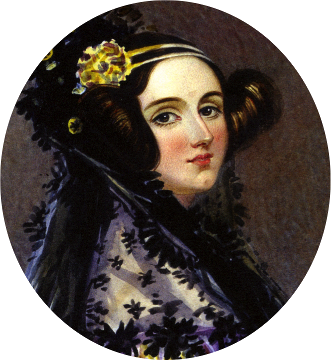

<!DOCTYPE html>
<html lang="pt-br">
<head>
    <meta charset="UTF-8" />
    <meta http-equiv="X-UA-Compatible" content="IE=edge" />
    <meta name="viewport" content="width=device-width, initial-scale=1.0" />
    <title>Chatbot TRE-CE</title>
    <link href="https://unpkg.com/tailwindcss@^2/dist/tailwind.min.css" rel="stylesheet">
    
    <!-- Favicon section -->
    <!-- Definição dos ícones para diferentes tamanhos -->
    <link rel="apple-touch-icon" sizes="180x180" href="images/fav/apple-touch-icon.png">
    <link rel="icon" type="image/png" sizes="32x32" href="images/fav/favicon-32x32.png">
    <link rel="icon" type="image/png" sizes="16x16" href="images/fav/favicon-16x16.png">
    <link rel="manifest" href="images/fav/site.webmanifest">
    <link rel="mask-icon" href="images/fav/safari-pinned-tab.svg" color="#5bbad5">
    <meta name="msapplication-TileColor" content="#da532c">
    <meta name="theme-color" content="#ffffff">
</head>

<body>
    <!-- Barra lateral do logo -->
    <aside id="logo-sidebar" class="fixed top-0 left-0 z-40 w-64 h-screen transition-transform -translate-x-full sm:translate-x-0" aria-label="Sidebar">
        <!-- Conteúdo da barra lateral -->
        <div class="h-full px-3 py-3 overflow-y-auto bg-gray-200">
            <div class="flex flex-col items-center mt-6 -mx-2 mb-8">
                <div class="relative">
                    <a href="https://www.tre-ce.jus.br/">
                        
                        
                    </a>
                </div>
            </div> 
            <hr class="my-6 border-gray-300 dark:border-gray-600"></hr>
            <!-- Menu de opções na barra lateral -->
            <ul class="space-y-3 font-medium">
                
                <!-- Opção "Mais Perguntados" -->
                <li>
                    <button type="button" class="flex items-center w-full p-2 text-base font-normal text-gray-900 transition duration-75 rounded-lg group hover:bg-gray-100 dark:text-white dark:hover:bg-gray-700" aria-controls="dropdown-example2" data-collapse-toggle="dropdown-example2">
                        <!-- Ícone do menu -->
                        <svg class="flex-shrink-0 w-5 h-5 text-gray-500 transition duration-75 group-hover:text-gray-900 dark:text-gray-400 dark:group-hover:text-white" fill="currentColor" viewBox="0 0 20 20" xmlns="http://www.w3.org/2000/svg"><path fill-rule="evenodd" d="M8 18h10.237L20 19.385V9h1a1 1 0 0 1 1 1v13.5L17.545 20H9a1 1 0 0 1-1-1v-1zm-2.545-2L1 19.5V4a1 1 0 0 1 1-1h15a1 1 0 0 1 1 1v12H5.455z" clip-rule="evenodd"></path></svg>
                        <span class="flex-1 ml-3 text-left whitespace-nowrap" sidebar-toggle-item>Perguntas frequentes</span>
                        <svg sidebar-toggle-item class="w-6 h-6" fill="currentColor" viewBox="0 0 20 20" xmlns="http://www.w3.org/2000/svg"><path fill-rule="evenodd" d="M5.293 7.293a1 1 0 011.414 0L10 10.586l3.293-3.293a1 1 0 111.414 1.414l-4 4a1 1 0 01-1.414 0l-4-4a1 1 0 010-1.414z" clip-rule="evenodd"></path></svg>
                    </button>
                    <!-- Conteúdo do dropdown -->
                    <ul id="dropdown-example2" class="hidden py-2 space-y-2">
                        <li>
                            <a href="#" class="flex items-center w-full p-2 text-base font-normal text-gray-900 transition duration-75 rounded-lg group hover:bg-gray-100 dark:text-white dark:hover:bg-gray-700 pl-11">Primeiro título</a>
                        </li>
                        <li>
                            <a href="#" class="flex items-center w-full p-2 text-base font-normal text-gray-900 transition duration-75 rounded-lg group hover:bg-gray-100 dark:text-white dark:hover:bg-gray-700 pl-11">Erros de cadastro</a>
                        </li>
                        <li>
                            <a href="#" class="flex items-center w-full p-2 text-base font-normal text-gray-900 transition duration-75 rounded-lg group hover:bg-gray-100 dark:text-white dark:hover:bg-gray-700 pl-11">Segunda via ou impressão de Título</a>
                        </li>
                    </ul>
                </li>
                <!-- Opção "Products" -->
                <li>
                    <a href="#" class="flex items-center p-2 text-gray-900 rounded-lg dark:text-white hover:bg-gray-100 dark:hover:bg-gray-700 group">
                        <!-- Ícone do menu -->
                        <svg class="flex-shrink-0 w-5 h-5 text-gray-500 transition duration-75 dark:text-gray-400 group-hover:text-gray-900 dark:group-hover:text-white" aria-hidden="true" xmlns="http://www.w3.org/2000/svg" fill="currentColor" viewBox="0 0 18 20">
                            <path d="M17 5.923A1 1 0 0 0 16 5h-3V4a4 4 0 1 0-8 0v1H2a1 1 0 0 0-1 .923L.086 17.846A2 2 0 0 0 2.08 20h13.84a2 2 0 0 0 1.994-2.153L17 5.923ZM7 9a1 1 0 0 1-2 0V7h2v2Zm0-5a2 2 0 1 1 4 0v1H7V4Zm6 5a1 1 0 1 1-2 0V7h2v2Z"/>
                        </svg>
                        <span class="flex-1 ml-3 whitespace-nowrap">Products</span>
                    </a>
                </li>
                <!-- Opção "Sobre" -->
                <li>
                    <button type="button" class="flex items-center w-full p-2 text-base font-normal text-gray-900 transition duration-75 rounded-lg group hover:bg-gray-100 dark:text-white dark:hover:bg-gray-700" aria-controls="dropdown-example" data-collapse-toggle="dropdown-example">
                        <!-- Ícone do menu -->
                        <svg class="flex-shrink-0 w-6 h-6 text-gray-500 transition duration-75 group-hover:text-gray-900 dark:text-gray-400 dark:group-hover:text-white" fill="currentColor" viewBox="0 0 20 20" xmlns="http://www.w3.org/2000/svg"><path fill-rule="evenodd" d="M8 16A8 8 0 1 0 8 0a8 8 0 0 0 0 16zm.93-9.412-1 4.705c-.07.34.029.533.304.533.194 0 .487-.07.686-.246l-.088.416c-.287.346-.92.598-1.465.598-.703 0-1.002-.422-.808-1.319l.738-3.468c.064-.293.006-.399-.287-.47l-.451-.081.082-.381 2.29-.287zM8 5.5a1 1 0 1 1 0-2 1 1 0 0 1 0 2z" clip-rule="evenodd"></path></svg>
                        <span class="flex-1 ml-3 text-left whitespace-nowrap" sidebar-toggle-item>Sobre</span>
                        <svg sidebar-toggle-item class="w-6 h-6" fill="currentColor" viewBox="0 0 20 20" xmlns="http://www.w3.org/2000/svg"><path fill-rule="evenodd" d="M5.293 7.293a1 1 0 011.414 0L10 10.586l3.293-3.293a1 1 0 111.414 1.414l-4 4a1 1 0 01-1.414 0l-4-4a1 1 0 010-1.414z" clip-rule="evenodd"></path></svg>
                    </button>
                    <!-- Conteúdo do dropdown -->
                    <ul id="dropdown-example" class="hidden py-2 space-y-2">
                        <li>
                            <p class="mx-2 mt-1 text-sm font-medium text-gray-600">Apresentamos a Ada, o assistente virtual do Tribunal Regional do Ceará (TRE-CE), pronto para auxiliá-lo na elucidação de suas dúvidas e na resolução de questões relacionadas ao TRE.</p>
                        </li>
                    </ul>
                </li>
            </ul>
        </div>
    </aside>
    
    <!-- Área principal de conteúdo -->
    <div class="p-4 sm:ml-64">
        <div class="p-4">
            <!-- Rodapé com campo de entrada do chat -->
            <footer class="fixed bottom-0 left-0 right-0 p-2 bg-white border-t border-gray-200">
                <div class="flex flex-col flex-1 sm:ml-64 pr-4" id="chatbot">
                    <div class="flex items-center space-x-2">
                        <!-- Botão do microfone -->
                        <button id="mic_on" type="submit"
                            class="inline-flex items-center justify-center rounded-full h-12 w-12 transition duration-500 ease-in-out text-gray-500 hover:bg-gray-300 focus:outline-none">
                            <svg xmlns="http://www.w3.org/2000/svg" fill="none" viewBox="0 0 24 24" stroke="currentColor" class="h-6 w-6 text-gray-600">
                                <path stroke-linecap="round" stroke-linejoin="round" stroke-width="2" d="M19 11a7 7 0 01-7 7m0 0a7 7 0 01-7-7m7 7v4m0 0H8m4 0h4m-4-8a3 3 0 01-3-3V5a3 3 0 116 0v6a3 3 0 01-3 3z"></path>
                            </svg>
                        </button>
                        <!-- Campo de entrada de texto -->
                        <input id="texto_usuario" type="text" placeholder="Escreva aqui sua mensagem!"
                            class="w-full focus:outline-none focus:placeholder-gray-400 text-gray-600 placeholder-gray-600 pl-12 bg-gray-200 rounded-md py-3">
                        <!-- Botão de envio de mensagem -->
                        <button type="submit" id="enviar"
                            class="font-semibold items-center justify-center rounded-lg px-4 py-3 transition duration-500 ease-in-out text-black bg-green-400 hover:bg-green-600 focus:outline-none">
                            Enviar
                        </button>
                    </div>
                </div>
            </footer>
            
            <!-- Seção de chat -->
            <main>
                <!-- Botão de alternância para modo escuro -->
                <button class="w-16 h-9 rounded-full bg-white fixed z-90 bottom-20 right-7 items-center transition duration-300 focus:outline-none shadow" 
                    id="switch-bg" 
                    onclick="toggleTheme()">
                    <div id="switch-toggle" class="w-9 h-9 relative rounded-full transition duration-500 transform bg-yellow-500 -translate-x-2 p-1 text-white">
                        <svg xmlns="http://www.w3.org/2000/svg" fill="none" viewBox="0 0 24 24" stroke="currentColor">
                            <path stroke-linecap="round" stroke-linejoin="round" stroke-width="2" d="M12 3v1m0 16v1m9-9h-1M4 12H3m15.364 6.364l-.707-.707M6.343 6.343l-.707-.707m12.728 0l-.707.707M6.343 17.657l-.707.707M16 12a4 4 0 11-8 0 4 4 0 018 0z" />
                        </svg>
                    </div>
                </button>
                
                <!-- Área de mensagens do chat -->
                <div id="chat-bot" class="w-full p-2 px-1 h-[calc(100vh-232px)] overflow-y-auto bg-origin-padding pb-8">
                    <div id="response" class="p-5 overscroll-auto"></div>
                    <!-- Gerador de mensagens -->
                    <div class="w-10/12 p-4">
                        <div id="TEMPLATES" class="hidden">
                            <!-- Modelo de mensagem do bot -->
                            <div id="TEMPLATE_BOT" class="flex mb-4 pr-24">
                                <div class="ml-2">
                                    <div class="bg-gradient-to-b from-indigo-600 via-indigo-500 to-indigo-400 ml-2 py-3 px-4 shadow-md rounded-br-xl rounded-tr-xl rounded-tl-xl text-gray-100 break-all">
                                        <p class="texto texto_bot"></p>
                                    </div>
                                </div>
                            </div>
                            <!-- Modelo de mensagem do usuário -->
                            <div id="TEMPLATE_HUMANO" class="flex mb-4 pl-24">
                                <div class="ml-auto">
                                    <div class="bg-gradient-to-b from-teal-600 via-teal-500 to-teal-400 mr-2 py-3 px-4 shadow-sm rounded-l-xl rounded-tr-xl text-gray-100 break-all">
                                        <p class="texto texto_humano"></p>
                                    </div>
                                </div>
                            </div>
                            <!-- Modelo de sugestão -->
                            <span id="TEMPLATE_SUGESTAO">
                                <button type="button" class="btn btn-outline-primary sugestao"></button>
                            </span>
                        </div>
                    </div>
                </div>
            </main>
        </div>
    </div>
    
    <!-- Scripts JavaScript -->
    <script src="https://code.jquery.com/jquery-3.6.0.min.js"></script>
    <script src="https://unpkg.com/flowbite@1.3.4/dist/flowbite.js"></script>
    <script src="js/chat_generation.js"></script>
    <script src="js/dark_mode_toggle.js"></script>
    
    <style src="css/styles.css">
    .treButton {
        width: 40px;
        height: 40px;
        border-radius: 1%;
        position: absolute;
        bottom: 4px; /* Ajuste este valor para controlar a sobreposição */
        left: 82%; /* Posicione na borda horizontal */
        transform: translateX(-28%); /* Centralize o círculo horizontalmente */
    }
    </style>
</body>
</html>
